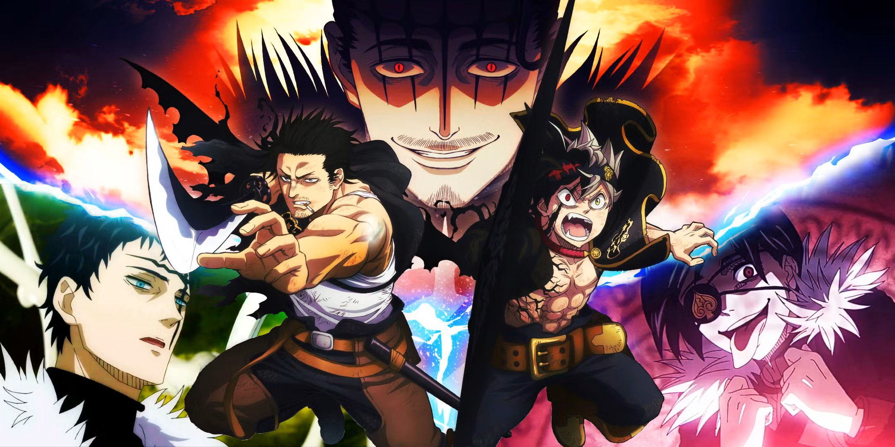
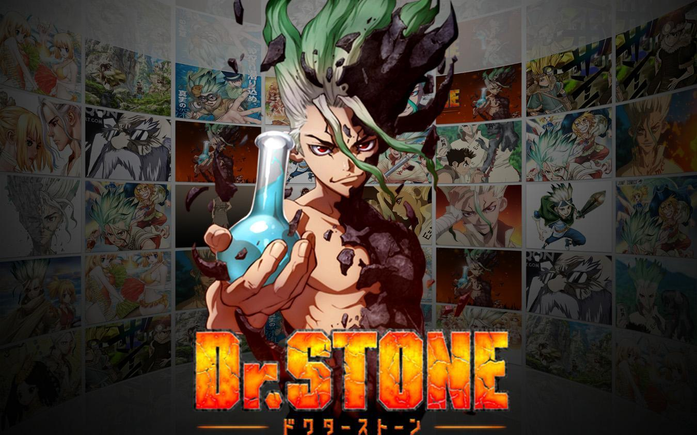
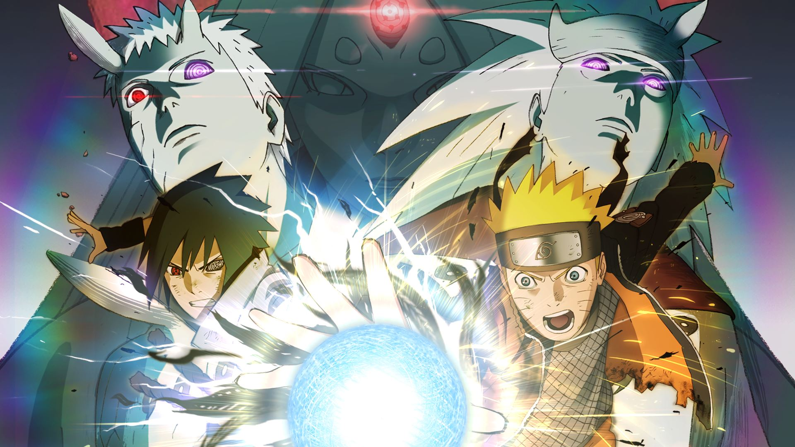

Semua Artikel
Jelajahi seluruh daftar berita, ulasan, dan analisa anime di AniZone

Anime Musim Ini yang Wajib Masuk Watchlist Kamu
Rekomendasi anime-anime terbaru paling hits musim ini yang wajib masuk daftar tontonan kamu, lengkap dari genre aksi hingga fantasi.
Baca Detail
Ulasan Solo Leveling Season 2: Apakah Sesuai Ekspektasi Fans?
Ulasan mendalam mengenai aksi pertarungan epik Sung Jin-woo, peningkatan kualitas visual, dan alur cerita di musim terbarunya.
Baca Detail
Membahas Teori Akhir Cerita One Piece: Rahasia Besar Kekuatan Joy Boy
Bedah teori populer komunitas mengenai rahasia kekuatan abad kejayaan, identitas asli Joy Boy, dan takdir Luffy di babak akhir.
Baca Detail
Black Clover Season 2: Penantian Panjang Perang Ksatria Sihir
Membahas rumor kelanjutan petualangan Asta dan Yuno, potensi pertarungan melawan Kerajaan Spade, serta peningkatan kualitas animasi yang dinantikan para fans.
Baca Detail
Dr. STONE: Membangun Ulang Peradaban Manusia dengan Sains
Ulasan menarik tentang bagaimana Senku Ishigami memanfaatkan ilmu pengetahuan untuk membangkitkan dunia yang membatu selama ribuan tahun.
Baca Detail
Tragedi Perang Dunia Shinobi Ke-3: Awal Mula Takdir Obito dan Kakashi
Membahas peristiwa kelam Perang Dunia Shinobi Ke-3, hancurnya Jembatan Kannabi, serta asal-usul bangkitnya Sharingan milik Kakashi Hatake.
Baca Detail